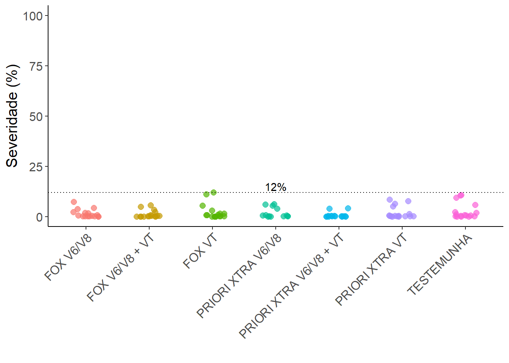

library(gsheet) # importação dos dados
library(tidyverse) # manipulação dos dados
library(ggthemes) # Temas gráficos
library(epifitter) # utilizar a função AUDPC()
library(performance) # este e demais pacotes destinados a análise
library(ExpDes.pt)
library(emmeans)
library(multcomp)Abordagem como um simples DBC
Pacotes
Pacotes requeridos no decorrer do código.
Importando o banco de dados
dados <- gsheet2tbl('https://docs.google.com/spreadsheets/d/18JYhRvnwob5L0kAOor9o22Y_AwLkD7XU/edit?gid=173826027#gid=173826027')Ajustando os dados
Antes de seguir com a análise dos dados, vamos criar uma nova variável resposta a partir da severidade das folhas 1, 2 e 3 das 3 plantas avaliadas. Essa nova variável será denominada severidade média.
dados <- dados |>
mutate(sev.med = rowMeans(across(starts_with('sev_f')))) |>
dplyr::select(- starts_with('sev_f')) |>
group_by(treat, block, assessment) |>
summarise(sev_med = mean(sev.med))
dados$sev_med <- round(dados$sev_med, 2)Gráfico de dispersão
Observando a amplitude dos dados.
plot1 <- dados |>
ggplot(aes(x = treat, y = sev_med, color = treat)) +
geom_jitter(width = 0.2, size = 2.5, alpha = 0.7) +
labs(x = ' ', y = 'Severidade (%)', color = ' ') +
theme_classic() +
theme(axis.text.x = element_blank(), text = element_text(size = 15)) +
ylim(0, 100) +
geom_hline(yintercept = max(dados$sev_med), linetype = 3) +
annotate(geom = 'text', y = 15, x = 4, label = '12%')
plot1
Visualizando curvas de progresso
Como nossos dados foram coletados em 4 momentos diferentes, podemos criar um gráfico de pontos, em que, o eixo x receberá os momentos de avaliação e o eixo y a severidade média. As curvas geradas também são chamadas de curvas de progresso, que representa o progresso da epidemia no tempo.
plot2 <- dados |>
group_by(treat, assessment) |>
summarise(med = mean(sev_med)) |>
ggplot(aes(x = assessment, y = med, color = treat)) +
geom_point() +
geom_line(size = 1) +
theme(text = element_text(size = 15)) +
theme_classic() +
labs(x = 'Avaliações', y = 'Severidade média (%)', color = 'Tratamentos')
plot2Visualizando as mesmas curvas em gráficos separados.
dados |>
group_by(treat, assessment) |>
summarise(med = mean(sev_med)) |>
ggplot(aes(x = assessment, y = med)) +
geom_jitter(data = dados, aes(y = sev_med), color = 'gray', alpha = 0.7, width = 0.1) +
geom_line(size = 0.5) +
geom_point(color = 'red') +
theme_clean() +
theme(text = element_text(size = 15), axis.title = element_text(size = 15)) +
facet_wrap(~treat) +
labs(x = 'Avaliações', y = 'Severidade média (%)', color = 'Tratamentos')
Variáveis respostas
As variáveis respostas que serão analizadas aqui são a AACPD, Y máx e Produtividade (ton/ha).
AACPD
Calculando AACPD.
aacpd <- dados |>
group_by(treat, block) |>
summarise(aacpd = AUDPC(assessment, sev_med))plot3 <- aacpd |>
group_by(treat) |>
summarise(med = mean(aacpd)) |>
ggplot(aes(x = treat, y = med)) +
geom_col(fill = 'lightblue') +
theme_classic() +
theme(axis.text.x = element_text(angle = 45, hjust = 1), text = element_text(size = 15)) +
labs(x = ' ', y = "AACPD")
plot3
Y máx
Apenas vizualizando os gráficos anteriores, percebe-se que as epidemias se assemelham muito a um modelo exponencial. Isso facilita para a seleção do valor onde a intensidade da doença é máxima. No nosso caso, os valores de Y máx correspondem aos dados de severidade coletados na 4° avaliação. Portanto, basta filtrar essas linhas:
y.max <- dados |>
filter(assessment == 4) |>
dplyr::select(-assessment)Produtividade
Importando dados de produtividade.
prod <- gsheet2tbl('https://docs.google.com/spreadsheets/d/18JYhRvnwob5L0kAOor9o22Y_AwLkD7XU/edit?gid=1793405925#gid=1793405925')
prod <- prod |>
dplyr::select(treat, block, productivity)plot4 <- prod |>
group_by(treat) |>
summarise(prod = mean(productivity)) |>
ggplot(aes(treat, prod)) +
geom_col(fill = 'lightblue') +
theme_classic() +
theme(axis.text.x = element_text(angle = 45, hjust = 1), text = element_text(size = 15)) +
labs(x = ' ', y = "Produtividade (ton/ha)") +
ylim(0, 60)
plot4Análise estatística
Variável AACPD
Testando as premissas
Antes de seguir com a análise paramétrica, é preciso testar as premissas de homogeneidade de variâncias e normalidade dos resíduos. As funções check_heteroscedasticity() e check_normality() do pacote Performance, são utilizadas para verificar isso. De modo geral, a hipótese de nulidade das premissas é que as variâncias são homogêneas e os resíduos normais. Nesse caso, esperamos que o resultado do teste não seja significativo, ou seja, p-valor > 0,05. Após rodar o código temos como resultado p-valores > 0,05, indicando a posiibilidade de continuar com a análise paramétrica.
m1 <- lm(aacpd ~ treat + block, aacpd)
check_heteroscedasticity(m1)OK: Error variance appears to be homoscedastic (p = 0.336).check_normality(m1)OK: residuals appear as normally distributed (p = 0.334).ANOVA
A ANOVA indicou que existe pelo menos um par de tratamentos que se diferem entre si pelo teste F ao nível de 5% de probabilidade. Seguimos agora para o teste de comparações múltiplas para distinguir quais são os tratamentos que se diferem.
anova(m1)Analysis of Variance Table
Response: aacpd
Df Sum Sq Mean Sq F value Pr(>F)
treat 6 65.778 10.9629 8.0441 0.0001657 ***
block 1 4.281 4.2805 3.1408 0.0915890 .
Residuals 20 27.257 1.3629
---
Signif. codes: 0 '***' 0.001 '**' 0.01 '*' 0.05 '.' 0.1 ' ' 1Teste de Tukey
O teste de Tukey é um teste de comparações múltiplas muito utilizado em experimentos agrícolas. Ele realiza as comparações múltiplas entre todos os tratamentos e distingue-os. Possibilitando identificar quais foram os melhores e piores tratamentos.
Como resultado do teste abaixo, observamos a formação de 4 grupos com bantante anbiguidade (sobreposição de grupos) entre as médias dos tratamentos. Como a variável testada é referente a área abaixo da curva de progresso, queremos identificar quais foram os tratamentos que apresentaram menores valores. Pois, são estes tratamentos que apresentaram um melhor controle da epidemia. A interpretação é simples, médias dos tratamentos seguidas pela mesma letra não se diferem entre si, pelo teste de Tukey, ao nível de 5% de probabilidade. Dessa forma, verificamos que os fungicidas PRIORI XTRA e FOX aplicados nos estádios V6/V8 + VT e em V6/V8 se diferiram da TESTEMUNHA, mas não entre si. Quando os fungicidas foram aplicados somente no estádio VT não teve difereça da TESTEMUNHA.
Gerando uma informação mais prática quanto ao resultado, podemos concluir que, aplicando qualquer um dos fungicidas, quando o milho ainda está no seu estádio vegetativo (V6/V8), é a melhor alternativa para manejo de manchas foliares na cultura. Uma vez que, realizando duas aplicações nos estádios V6/V8 e VT seria desperdício de recursos e contaminação descecessária do meio ambiente.
cld(emmeans(m1, ~ treat), Letters = letters) treat emmean SE df lower.CL upper.CL .group
PRIORI XTRA V6/V8 + VT 1.34 0.584 20 0.122 2.56 a
FOX V6/V8 + VT 2.55 0.584 20 1.335 3.77 ab
PRIORI XTRA V6/V8 3.29 0.584 20 2.076 4.51 abc
FOX V6/V8 3.54 0.584 20 2.324 4.76 abc
PRIORI XTRA VT 4.30 0.584 20 3.082 5.52 bcd
FOX VT 5.31 0.584 20 4.096 6.53 cd
TESTEMUNHA 6.24 0.584 20 5.026 7.46 d
Confidence level used: 0.95
P value adjustment: tukey method for comparing a family of 7 estimates
significance level used: alpha = 0.05
NOTE: If two or more means share the same grouping symbol,
then we cannot show them to be different.
But we also did not show them to be the same. Variável Y máx
Testando premissas
Agora a interpretação fica mais fácil. O resultado de p-valor > 0,05 indica que podemos seguir com as análises.
m2 <- lm(sev_med ~ treat + block, y.max)
check_heteroscedasticity(m2)OK: Error variance appears to be homoscedastic (p = 0.377).check_normality(m2)OK: residuals appear as normally distributed (p = 0.788).ANOVA
A ANOVA indicou que há diferença entre os tratamentos.
anova(m2)Analysis of Variance Table
Response: sev_med
Df Sum Sq Mean Sq F value Pr(>F)
treat 6 140.024 23.3373 4.9346 0.003013 **
block 1 25.008 25.0078 5.2878 0.032380 *
Residuals 20 94.587 4.7294
---
Signif. codes: 0 '***' 0.001 '**' 0.01 '*' 0.05 '.' 0.1 ' ' 1Teste de Tukey
Semelhante ao observado no teste de comparações múltiplas da variável anterior, há grande anbiquidade entre os grupos formados. Com base nos resultados sobre a variável de intensidade máxima o melhor tratamento seria o PRIORI XTRA aplicado nos estádios V6/V8 e VT.
cld(emmeans(m2, ~ treat), Letters = letters) treat emmean SE df lower.CL upper.CL .group
PRIORI XTRA V6/V8 + VT 2.12 1.09 20 -0.146 4.39 a
FOX V6/V8 + VT 4.00 1.09 20 1.737 6.27 ab
FOX V6/V8 4.21 1.09 20 1.944 6.48 abc
PRIORI XTRA V6/V8 5.37 1.09 20 3.099 7.64 abc
PRIORI XTRA VT 6.86 1.09 20 4.587 9.12 abc
FOX VT 7.84 1.09 20 5.569 10.11 bc
TESTEMUNHA 9.04 1.09 20 6.769 11.31 c
Confidence level used: 0.95
P value adjustment: tukey method for comparing a family of 7 estimates
significance level used: alpha = 0.05
NOTE: If two or more means share the same grouping symbol,
then we cannot show them to be different.
But we also did not show them to be the same. Variável de PRODUTIVIDADE
Testando premissas
Premissas atendidas!
Seguimos para a ANOVA.
m3 <- lm(productivity ~ treat + block, prod)
check_heteroscedasticity(m3)OK: Error variance appears to be homoscedastic (p = 0.516).check_normality(m3)OK: residuals appear as normally distributed (p = 0.197).ANOVA
O p-valor do teste F foi maior que 0,05. Logo, conclui-se que não existe diferença entre os tratamentos quando se analisa a varial PRODUTIVIDADE.
De maneira prática, podemos dizer que se o objetivo do ensaio foi controlar manchas foliares na cultura do milho e não houve diferença significativa entre as médias de produtividade, não realizar a aplicação de fungicida seria a melhor opção.
anova(m3)Analysis of Variance Table
Response: productivity
Df Sum Sq Mean Sq F value Pr(>F)
treat 6 14.72 2.4528 0.0980 0.9958
block 1 8.35 8.3510 0.3337 0.5699
Residuals 20 500.52 25.0260 Gráficos
Tratamentos que se diferiram da testemunha.
plot2 <- plot2 +
annotate(geom = 'text', x = 4, y = 1.72, label = '*', size = 7) +
annotate(geom = 'text', x = 4, y = 3.6, label = '*', size = 7)
plot2
plot3 <- plot3 +
annotate(geom = 'text', x = 5, y = 1.7, label = '*', size = 7) +
annotate(geom = 'text', x = 2, y = 3, label = '*', size = 7) +
annotate(geom = 'text', x = 4, y = 3.8, label = '*', size = 7) +
annotate(geom = 'text', x = 1, y = 4, label = '*', size = 7)
plot3
plot4 <- plot4 +
annotate(geom = 'text', x = 7, y = 49, label = 'ns', size = 5)
plot4